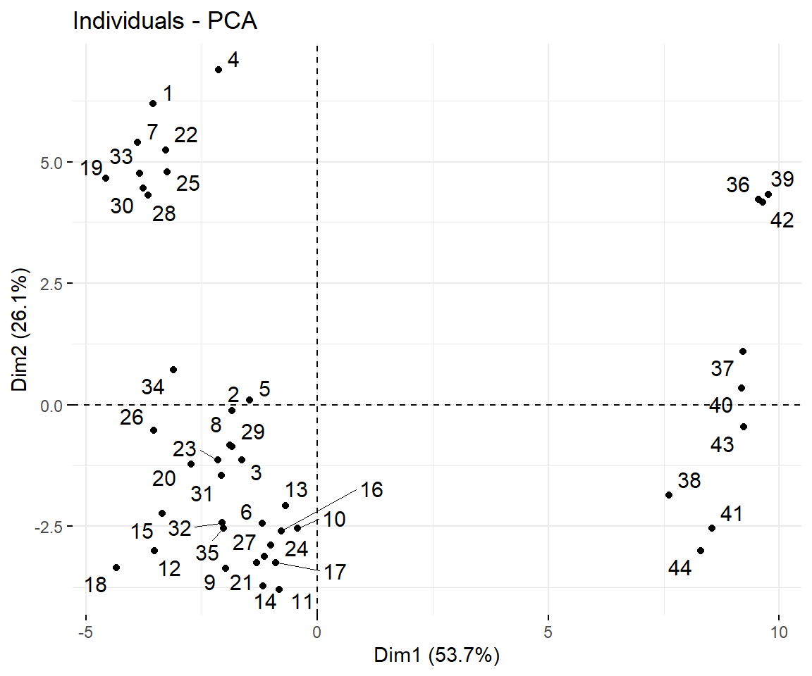
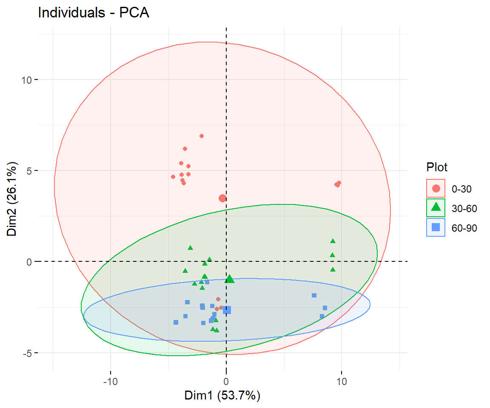
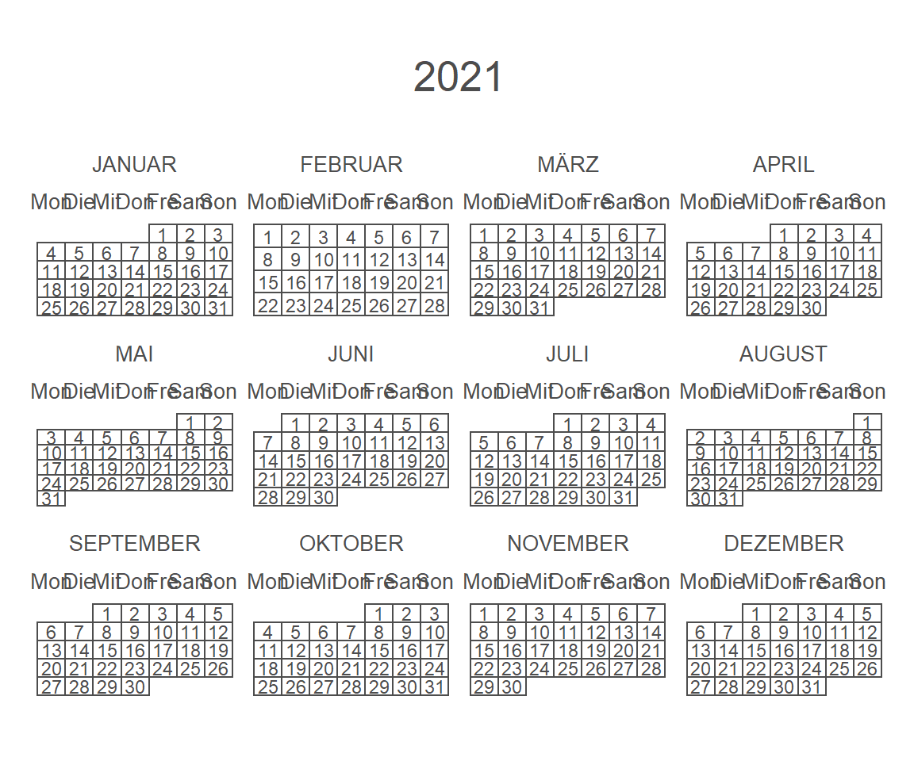
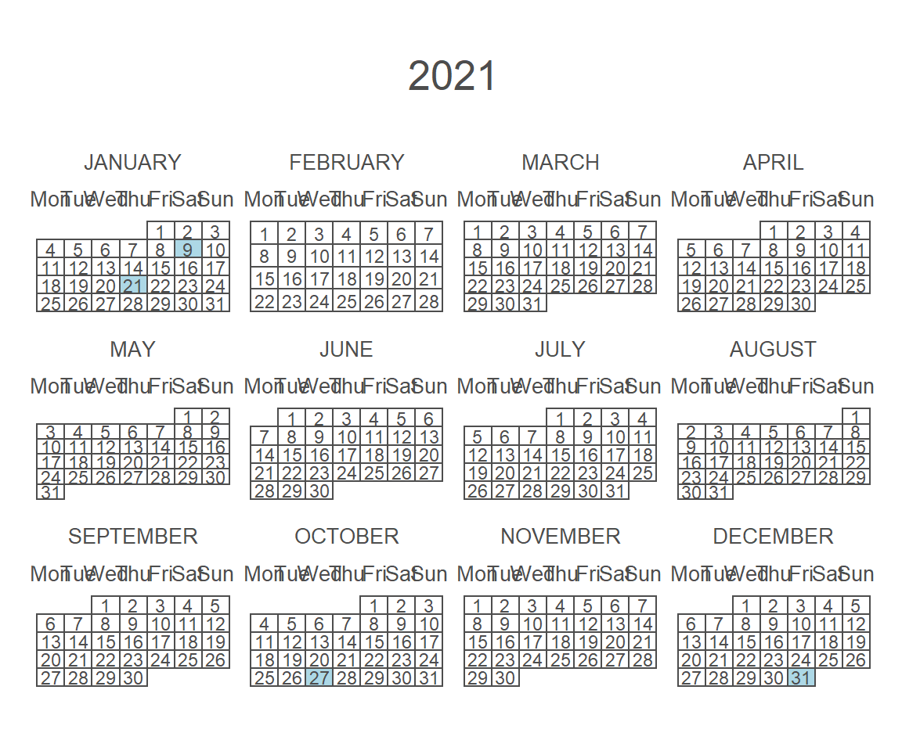
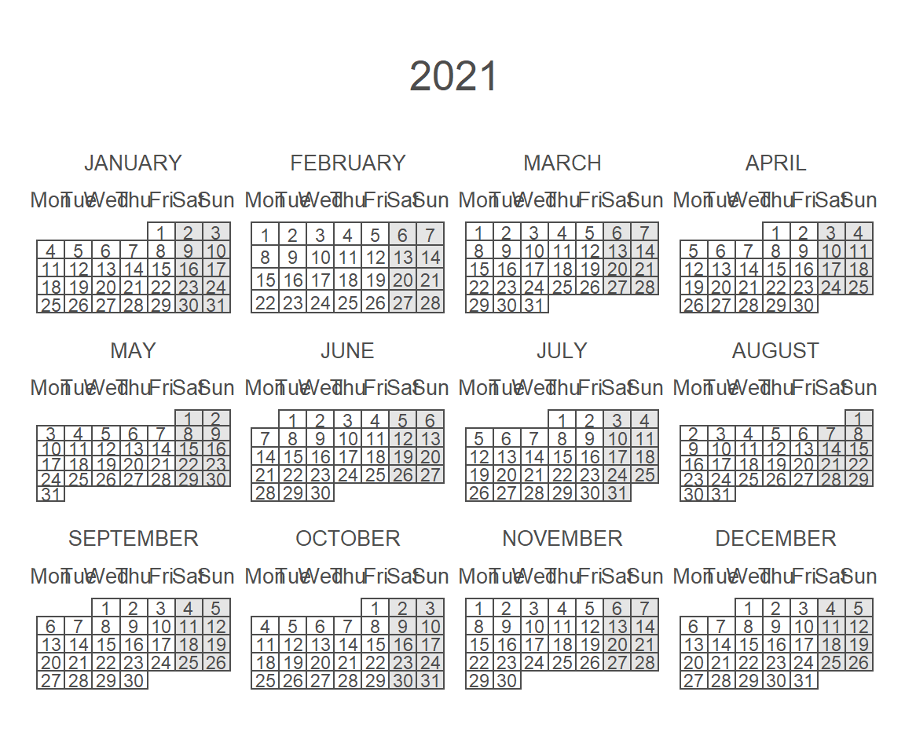

15.3 FAQs
15.3.1 Kalender erstellen
🔍 https://r-coder.com/calendar-plot-r/
Als erstes laden wir das calendR package:
# Load the package
library(calendR)
# Display the current year
calendR()
# Specifiy the year you prefer
calendR(year = 2020)
# start with monday
calendR(year = 2021,
start = "M")
# change the language compared with the operating system
Sys.setlocale("LC_ALL", "English")
## [1] "LC_COLLATE=English_United States.1252;LC_CTYPE=English_United States.1252;LC_MONETARY=English_United States.1252;LC_NUMERIC=C;LC_TIME=English_United States.1252"
calendR(year = 2021,
start = "M",
special.days = c(9, 21,300, 365),
special.col = "lightblue"
)
# highlight all the weekends
calendR(year = 2021,
start = "M",
special.days = "weekend") # Color all weekends
15.3.2 RStudio
🔍 https://community.rstudio.com/t/plots-not-showing-up-in-the-plots-pane-in-rstudio/3981/5
Falls die Plots nicht in im plots Fenster oder im Viewer der RStudio Benutzeroberfläche angezeigt werden, sondern aussschließlich unter dem code chunk, dann müssen die folgenden Einstellungen gesetzt werden:
Figure 15.1: Lage Standort Speicherkoog
15.3.3 Datenmanipulation
15.3.3.1 Create decadal data
Ein schneller Schritt eine Spalte pro Dekade zu erstellen geht folgendermaßen:
# Example with the gapminder data
gapminder %>%
select(year, country, pop) %>%
head(n = 5)
## # A tibble: 5 x 3
## year country pop
## <int> <fct> <int>
## 1 1952 Afghanistan 8425333
## 2 1957 Afghanistan 9240934
## 3 1962 Afghanistan 10267083
## 4 1967 Afghanistan 11537966
## 5 1972 Afghanistan 13079460
# Use floor() and round to the nearest border
gapminder %>%
mutate(
decade = floor(year / 10),
decade = decade * 10,
decade = factor(decade)
) %>%
select(year, decade, country, pop) %>%
head(n = 5)
## # A tibble: 5 x 4
## year decade country pop
## <int> <fct> <fct> <int>
## 1 1952 1950 Afghanistan 8425333
## 2 1957 1950 Afghanistan 9240934
## 3 1962 1960 Afghanistan 10267083
## 4 1967 1960 Afghanistan 11537966
## 5 1972 1970 Afghanistan 1307946015.3.3.2 String manipulation
🔍 http://www.endmemo.com/r/gsub.php 🔍 https://bookdown.org/rdpeng/rprogdatascience/r-nuts-and-bolts.html
Die wichtigsten R Funktionen um Strings zu bearbeiten sind:
grep()undgrepl(): Sucht nach einem regulären Ausdruck in einem Stringregexpr(),gregexpr()undregexec(): Sucht nach Treffern in einem regulären Ausdruck und geben die Indizes wieder, wo der Treffer auftrifft.sub()undgsub(): Sucht nach einem regulären Ausdruck in einem String und ersetzt diesen
Das Muster ist dabei pattern - replacement:
gsub(pattern, replacement, x, ignore.case = FALSE, perl = FALSE, fixed = FALSE, useBytes = FALSE)
x <- "Eine tolle Exursion"
gsub("Eine tolle", "Die weltbeste", x)
## [1] "Die weltbeste Exursion"15.3.3.3 Split a single column into multiple columns
🔍 https://cmdlinetips.com/2018/03/how-to-split-text-in-a-column-in-data-frame-in-r/
Beim Anlegen von Variablennamen kann man Informationen in dem jeweiligen Namen bereits hinterlegen. Zum Beispiel die Codierung 01_10_st kann vom Standort 01 in 10 cm Tiefe der Parameter Bodentemperatur sein. Möchte ich diese Spalteninformationen nun auf mehrer Spalten Verteilen eignet sich die Funktion separate.
x <- tibble(
id = "01_10_st",
value = 10.3
)
x
## # A tibble: 1 x 2
## id value
## <chr> <dbl>
## 1 01_10_st 10.3
# Create new columns with the information from the id column
y <- x %>%
separate(id, into = c("study_site", "depth", "parameter"))
y
## # A tibble: 1 x 4
## study_site depth parameter value
## <chr> <chr> <chr> <dbl>
## 1 01 10 st 10.3Aber Achtung. R ist auch hier Anfällig gegenüber Groß- Kleinschreibung.
x <- "Eine tolle Exursion"
gsub("Eine Tolle", "Die weltbeste", x)
## [1] "Eine tolle Exursion"Ich kann aber auch das Argument setzen, dass Kleinschreibung egal ist mit:
x <- "Eine tolle Exursion"
gsub("Eine Tolle", "Die weltbeste", x, ignore.case = T)
## [1] "Die weltbeste Exursion"